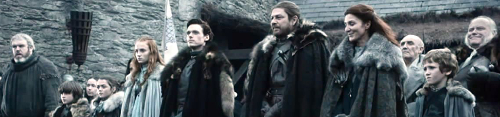
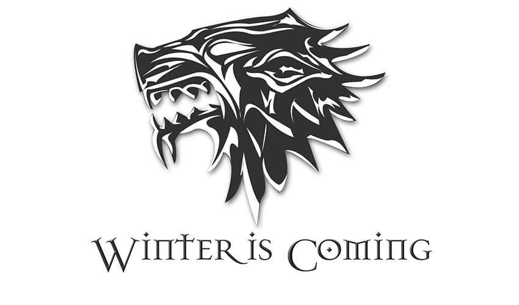
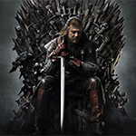
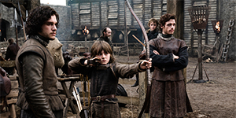

The Starks of Winterfell
The Stark Family
|  |
House Stark is one of the Great Houses Westeros, ruling over the vast region known as from their seat in. It is by far one of the oldest lines of Westerosi nobility, claiming a line of descent stretching back over eight thousand years. The head of the house is the Lord of Winterfell. Before the Targaryen conquest, the leaders of House Stark ruled over the region as the Kings in the North. House Stark's sigil is a grey direwolf on a white field, sometimes white and pale green. They are one of the few noble Houses whose family words are not a boast or threat. Instead, the House Stark family motto is the ominous warning, "Winter is Coming". The Starks are an ancient house, descended from Bran the Builder, a legendary figure from the Age of Heroes, who raised their ancestral home at Winterfell thousands of years in the past, as well as the Wall. They are descendants of the First Men and still follow some of their ancient traditions and the Old Gods of the forest. The Starks were Kings of Winter in the North for many thousands of years from the Age of Heroes, possibly beginning with Bran the Builder. Ever since Bran constructed the Wall, the Starks have been friends of the Night's Watch, and have manned the Wall for thousands of years. The Night's King, the attainted 13th Lord Commander of the Night's Watch, is said to have been a Stark, among his many possible origins. The Starks also helped repel several major wildling invasions, such as when they and their Umber bannermen defeated the Kings Beyond the Wall, like the brothers Gendel and Gorne, as well as Bael the Bard, who both sired and fought a Stark. For several millennia, the Starks were not the uncontested Kings of the North, but their primary antagonists the Boltons of the Dreadfort swore fealty some 1,000 years ago, ending their flesh-flaying ways. Meanwhile King Jon Stark drove pirates from the White Knife, and the Wolf's Den was built at its mouth. This stronghold and the city which grew up around it (White Harbor) was often granted to sons and grandsons of the King in the North or other bannermen before finally being granted to the Manderlys, a house exiled from the Reach and taken in by the Starks. King Jon's son Rickard defeated the Marsh King and married his daughter, bringing the Neck into Winterfell's realm under the lordship of House Reed. The Karstarks were founded when Karlon Stark, brother to the reigning king, helped crush a revolt of the Boltons and was granted a keep for his service. Finally, The Mormonts were granted Bear Island when King Rodrik Stark won it from the ironborn in a wrestling match. The Starks fought the Arryns of the Vale for the Three Sisters, eventually ceding control of the islands. Aside from the Karstarks, the Starks of Winterfell may have distant relatives elsewhere in the North, possibly in White Harbor and Barrowtown. The last Stark King of the North was Torrhen, who submitted to Aegon the Conqueror at the end of the War of Conquest. Since that time the Starks have held the North for the kings of the Seven Kingdoms as Wardens of The North. Around 213AL, House Stark faced a difficult succession. Several Lords of Winterfell had perished fighting wars in the North against rebellious Skagosi, the wildling king Raymun Redbeard and other threats, leaving Beron Stark as the lord of the house. As he too lay slowly succumbing to wounds he received fighting Dagon Greyjoy and his ironborn, his wife and four other recent Stark widows struggled over who would succeed him. There were a number of potential heirs, with some ten Stark children about. Recent BackgroundLord Rickard Stark and his maester, Walys Flowers, sought to further southron alliances by betrothing Rickard's heir Brandon to Catelyn Tully of Riverrun. Petyr Baelish, a ward of Catelyn's father, loved Catelyn and challenged Brandon to a duel for her hand. Brandon won their duel, but did not kill him in concession to Catelyn's pleas. Meanwhile Lyanna was betrothed to Lord Robert Baratheon, who was infatuated with her from a distance. Lyanna, however, was not as ardent in her love for Robert, and was fully aware of his philandering ways. Prince Rhaegar Targaryen after winning the Tourney at Harrenhal, crowned her Queen of Love and Beauty, passing over his wife, the Dornish princess Elia, in her favor. The exact nature of her relationship with Rhaegar is not presently clear, but shortly thereafter she disappeared in Rhaegar's company and Robert and her brother Brandon Stark believed that Lyanna had been taken against her will. Brandon was on his way to Riverrun to wed Catelyn Tully when he heard this news. He and four companions rode to King's Landing to seek her return, but both he and Lord Rickard were executed on the order of the Mad King. Lord Jon Arryn refused to hand his wards Eddard Stark and Robert Baratheon over when Aerys demanded their heads, and civil war broke out. During its course, Eddard honored his late brother's betrothal to Catelyn Tully as part of an alliance to bring her house into the rebel fold. He was one of the principal commanders in the war, but had a falling out with Robert after he accepted the treacherous aid of House Lannister and condoned the brutal murders of Rhaegar's wife, son and daughter out of his hatred for the Targaryen prince. After the Sack of King's Landing, Eddard and six companions went to retrieve Lyanna at the fortress Rhaegar had named the Tower of Joy. They fought three Kingsguard knights stationed there, who killed all but Eddard and Howland Reed. Eddard found Lyanna dying in a "bed of blood" and clutching a withered wreath of blue roses. She forced him to make a promise to her, the contents of which are unknown, but which haunted Eddard for the rest of his life. She was sixteen years old at the time of her death and was buried in the Stark family crypt in Winterfell beside her father and brother. Ned and Robert were reconciled in their shared grief, but Ned still disdained the court since Robert married Cersei Lannister and allowed her brother Jaime to remain a Kingsguard even after slaying his liege. Ned returned from the war to be presented with his trueborn son Robb, but he carried the infant Jon Snow, whom he presented as his bastard son. Six years later,Ned helped his foster brother crush Balon Greyjoy's rebellion, taking Theon Greyjoy as a ward of Winterfell.Lord Rickard's youngest child, Benjen Stark,joined the Night's Watch, eventually becoming First Ranger. Eddard ruled the North in Robert's name, keeping distant from the intrigue-ridden, Lannister-infested politics of King's Landing. Even though the Starks avoid the Southern politics, sometimes one cannot avoid certain situations. WARNING: VIDEO BELOW IS MATURE CONTENT...BUT IT IS AWESOME |